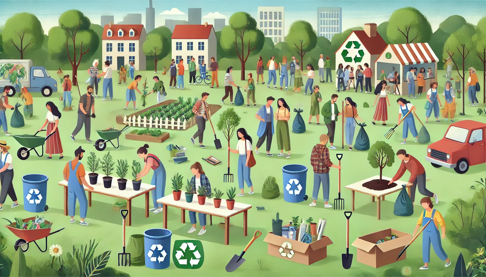

2025-05-17-evenement-5
Journée Éco-citoyenne - Samedi 17 mai 2025
Chers voisins et amis de l'environnement,
L'association "Vivre aux Lilas" vous invite chaleureusement à participer à notre Journée Éco-citoyenne annuelle, qui se tiendra le samedi 17 mai 2025 de 9h à 18h dans tout le quartier des Lilas.
Objectif de la journée
Sensibiliser et agir concrètement pour la protection de notre environnement local, tout en renforçant les liens entre les habitants du quartier.
Programme
- 9h : Rassemblement et petit-déjeuner bio sur la place centrale
- 9h30-12h : Grand nettoyage du quartier (matériel fourni)
- 12h-14h : Pique-nique zéro déchet au Parc des Lilas
- 14h-16h : Ateliers thématiques :
- Fabrication de produits ménagers écologiques
- Initiation au compostage
- Atelier de réparation de petits électroménagers
- Customisation de vêtements usagés
- 16h-17h : Conférence "Réduire son empreinte carbone au quotidien" par Dr. Martin, expert en écologie
- 17h-18h : Plantation collective d'arbres et arbustes dans le quartier
Points de collecte spéciaux
Des points de collecte seront installés pour : - Piles et batteries usagées - Appareils électroniques hors d'usage - Vêtements et textiles
Informations pratiques
- Inscription recommandée (mais non obligatoire) auprès de Léa au 01 98 76 54 32 ou eco-journee@vivreauxlilas.fr
- Prévoir des chaussures confortables et des vêtements adaptés
- Apportez vos gants de jardinage si possible
- En cas de pluie, les activités extérieures seront adaptées ou reportées
Appel aux bénévoles
Nous avons besoin de volontaires pour encadrer les différentes activités. Si vous souhaitez nous aider, merci de contacter Léa.
Ensemble, faisons de notre quartier un exemple de vie éco-responsable ! Chaque petit geste compte pour préserver notre environnement et améliorer notre cadre de vie.
L'équipe de "Vivre aux Lilas"